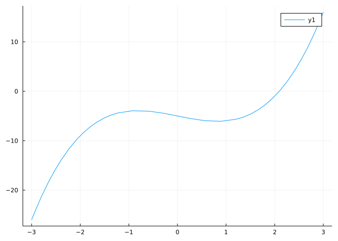
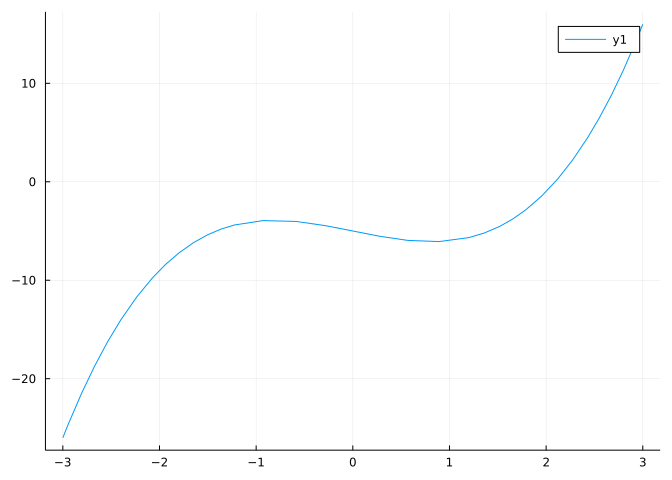
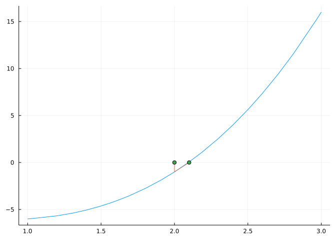
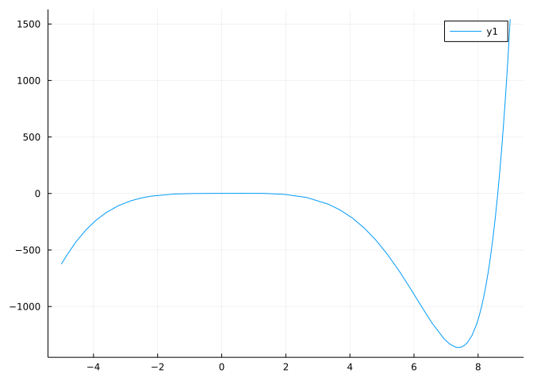
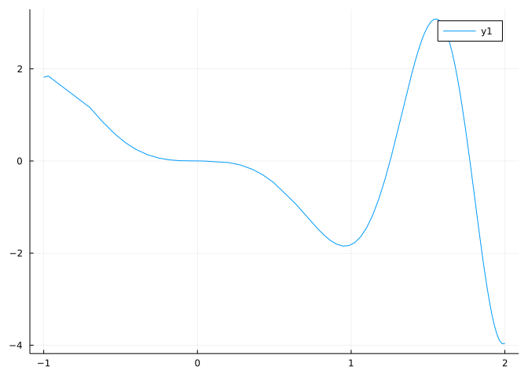
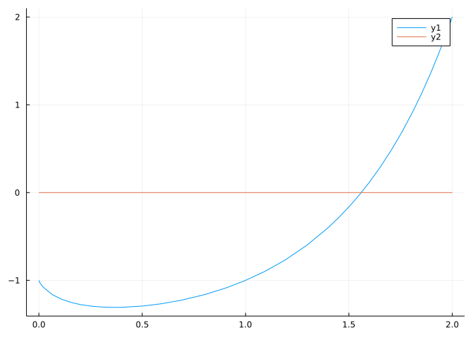

f(x) = x^3 - 2x - 5
plot(f, -3, 3)
A notebook for this material: ipynb (Pluto html) (With commentary)
Newton’s method is an old method for approximating a zero of a function, \(f(x)\):
\[ f(x) = 0 \]
Previously we discussed the bisection method which applied for some continuous function \(f(x)\) which changed signs between \(a\) and \(b\), points which bracket a zero. Not only did we need to find these bracketing points – which wasn’t hard from a graph, more importantly the actual algorithm is pretty slow.
If the function \(f\) is sufficiently differentiable, then Newton’s method may work to find a zero. Unlike the bisection method which is slow but guaranteed to find a root by the intermediate value theorem, Newton’s method is fast (once it is close) but has no such guarantee of converging. In this project, we’ll see how to implement the algorithm, try some examples, and then look at what can go wrong.
The MTH229 package provides a function newton for easily performing Newton’s method, utilizing a function from the Roots package. More usefully, we will see that find_zero, which we used for bisection, can also be used for root finding with an algorithm that is a bit more robust than Newton’s method.
To begin, we load MTH229 and Plots. In the background this loads Roots:
using MTH229
using PlotsThe idea behind Newton’s method is simple – linear approximation. That is, most functions at any given point are well approximated by the tangent line at that point. If we have a good guess \(x_n\), then we can improve this guess iteratively by replacing it with the zero, \(x_{n+1}\), of the tangent line at \((x_n, f(x_n))\).

A simple picture shows that we have a triangle with base \(x_{n+1} - x_{n}\), rise \(0 - f(x_n)\) and slope \(f'(x_n)\), using the “rise over run” formula:
\[ f'(x_n) = \frac{-f(x_n)}{x_{n+1} - x_{n}}. \]
The basic algorithm of Newton’s methods solves this to get:
\[ x_{n+1} = x_n - \frac{f(x_n)}{f'(x_n)}. \]
Some books write the right-hand side as \(x_n - f'(x_n)^{-1} f(x_n)\), a form that generalizes to different settings.
Like the bisection method, Newton’s method is an iterative method. One begins with a (suitable) guess \(x_0\). From that the algorithm produces \(x_1\) which is used to produce \(x_2\), etc. The idea is that one eventually will settle on a value \(x_n\) sufficiently close to the desired root.
Mathematically, the indices indicate that the right hand side is computed and assigned to the left hand side. This is exactly what is done in assignment within julia, so the above simply becomes:
x = x - f(x)/f'(x)Where f(x) is the function and f'(x) its derivative. (In this case found by automatic differentiation.) This line starts with a previously defined value of x and updates it accordingly.
The updating is continued – by executing the exact same command – until either the algorithm has gotten close enough to an answer (i.e., it has converged) or we have given up on it converging.
Here is an example to find a zero of the function: \(f(x) = x^3 - 2x - 5\).
A quick graph shows a root near 2:
f(x) = x^3 - 2x - 5
plot(f, -3, 3)
Here we improve the estimate for the root near 2 using Newton’s method. We will need the first derivative, which we denote fp
fp(x) = 3x^2 - 2
x = 2 # starting value, x_0
x = x - f(x)/fp(x) # new value, x_1
x, f(x)(2.1, 0.06100000000000083)We can visualize our progress as follows, noting that x holds \(x_1\), and zooming into the domain \([1,3]\):
x0, x1 = 2, x
plot(f, 1, 3, legend=false)
plot!([x0, x0, x1], [0, f(x0), 0]) # why these values?
scatter!([x0, x1], [0, 0])
Continuing, though without visualizing the progress, this next step will compute \(x_2\):
x = x - f(x)/fp(x)
x, f(x)(2.094568121104185, 0.00018572317327247845)This next step will compute \(x_3\):
x = x - f(x)/fp(x)
x, f(x)(2.094551481698199, 1.7397612239733462e-9)This next step will compute \(x_4\):
x = x - f(x)/fp(x)
x, f(x)(2.0945514815423265, -8.881784197001252e-16)This next step will compute \(x_5\):
x = x - f(x)/fp(x) # x stopped changing
x, f(x)(2.0945514815423265, -8.881784197001252e-16)We see that \(x_4=x_5\), so the algorithm has stabilized. We also see that \(f(x_4)\) is basically \(0\) (Recall, eps() is the machine precision, or the size of the difference between floating point values at \(1.0\) is basically \(10^{-16}\), the size of \(f(x_4)\).)
You can see in this case that the convergence happens quickly as soon as the algorithm gets close.
The approximate root is \(x_4\). It is important to realize that the actual, exact, answer is not likely to be the value computed by Newton’s method, which we call xstar at times. In most cases, the true answer will be irrational and xstar a floating point number, which ultimately can never be better than an approximation to an irrational number.
The above example iterated until it was clear the algorithm does not improve itself, as the values returned did not change. This need not be the case for every problem.
Rather, we can determine two ways that the number is close enough to the answer:
x’s stop changing by muchf(x) get close enough to zero.In the above, the first one was used. In either case, rather than look for values to be equal (e.g. \(x_{n+1} = x_{n}\) or \(f(x_n) = 0\), we look at whether these two things are close enough to be so. That means for some tolerance, we stop when the change in the x’s is smaller than the tolerance or f(x) is smaller – in absolute value – than the tolerance.
The above approach – basically repeating steps – can be tedious. There will be a function to do this for you (newton). One can use copy and paste to do much of this though:
f(x) = x^3 - 2x - 5
x = 2
x = x - f(x)/f'(x)
x = x - f(x)/f'(x)
x = x - f(x)/f'(x)
x = x - f(x)/f'(x)
x = x - f(x)/f'(x)
(x, f(x))(2.0945514815423265, -8.881784197001252e-16)Newton looked at this same example in 1699 (B.T. Polyak, Newton’s method and its use in optimization, European Journal of Operational Research. 02/2007; 181(3):1086-1096.) though his technique was slightly different as he did not use the derivative, per se, but rather an approximation based on the fact that his function was a polynomial (though identical to the derivative). Raphson (1690) proposed the general form, hence the usual name of Newton-Raphson method.
Using Newton’s method to find \(\sqrt{k}\) (by solving for roots of \(f(x) = x^2 - k\)) is also referred to as the Babylonian method, due to its origins. The resulting method
\[ x_{n+1} = \frac{1}{2}(x_n + \frac{k}{x_n}) \]
is described by the first-century Greek mathematician Hero of Alexandria.
Let \(k=15\) and \(x_0\) be \(4\). What is the value of \(x_3\)?
The function \(f(x) = \sin(x)\) has derivative \(f'(x) = \cos(x)\). Use Newton’s method to solve \(f(x) = 0\) starting at \(3\). Repeat 5 times. What value do you get for x?
(This can be used to compute \(\pi\) numerically, as the convergence is very fast. Here it takes 4 steps to verify.)
Let \(f(x) = x^2 - 3^x\). This has derivative \(2x - 3^x \cdot \log(3)\). Starting with \(x_0=0\), what does Newton’s method converge on?
For iterative algorithms it is better to repeat the expression until something happens – not a fixed number of times. In this case, we need a criteria to decide if the algorithm has converged. We shall use the following:
This isn’t perfect, but will be sufficient. (Well, in fact no stopping rule can be perfect, but this one doesn’t account for the relative size of the \(x_n\)s which can be important.)
The first two steps require a tolerance. We will use 1e-14 for this. This is about 100 times the machine precision, eps(), which is sufficient when the answers are moderate in size. This is not very good if the answers are very large.
A basic algorithm is to repeat a step of Newton’s method until the above occurs. We wrap this up in a function for reuse, and employ a while loop to repeat the update step until something happens:
function nm(f, fp, x)
xnew, xold = x, Inf
fn, fo = f(xnew), Inf
tol = 1e-14
ctr = 1
while (ctr < 100) && (abs(xnew - xold) > tol) && ( abs(fn - fo) > tol )
x = xnew - f(xnew)/fp(xnew) # update step
xnew, xold = x, xnew
fn, fo = f(xnew), fn
ctr = ctr + 1
end
if ctr == 100
error("Did not converge in 100 steps")
else
xnew, ctr
end
endnm (generic function with 1 method)Here we use the nm function to find a zero of this polynomial:
f(x) = x^3 - 5x + 1
fp(x) = 3x^2 - 5
xstar, ctr = nm(f, fp, 0) # takes 6 steps(0.20163967572340466, 6)However, the MTH229 package provides the newton function. So we shall use that in the sequel. To see the number of steps, the argument verbose=true may be given.
We revisit a problem from a previous project, finding zeroes of the function \(f(x) = \exp(x) - x^4\). We know from previous work that there are three of them. Let’s find one near \(x=2\):
f(x) = exp(x) - x^4
x = 2
xstar = newton(f, 2) # newton will use automatic differentiation for the derivative1.4296118247255556It took 8 steps and we are this close:
xstar, f(xstar)(1.4296118247255556, 0.0)In this case, the answer is exact up to floating point round off.
Repeat the problem of finding a root of \(f(x) = \exp(x) - x^4\) starting at \(x=2\). (newton(f, 2, verbose=true)). How many iterations does it take with the default tolerances?
If we repeat with \(f(x) = \exp(x) - x^4\) but start now at \(x=8\) where does the algorithm converge?
Let \(f(x) = \sin(x) - \cos(4\cdot x)\).
Starting at \(\pi/8\), solve for the root returned by Newton’s method
In order to use Newton’s method we need to evaluate \(f'(x)\). We have used automatic differentiation above through f'(x). Automatic differentiation returns a numerically accurate value for the derivative.
However, Newton’s method is actually fairly robust to using other related values to the derivative. That is the method will converge, though perhaps not as fast as with the derivative.
The secant method is perhaps the oldest numerical linear algebra tool dating back over 3000 years well before Newton’s method. Rather than use the derivative at \(x_i\) to compute \(x_{i+1}\), the secant line is used between \(x_{i-1}\) and \(x_i\). This method will also converge to a zero with a good starting point, though not nearly as quickly as Newton’s method.
You can check – if you want – by repeating the last command until the change in x2 is within your tolerance:
x2, x1 = 1, 2 # initial guess of 2
f(x) = x^2 - 2 # some function
fp(x1,x2) = (f(x1) - f(x2))/(x1 - x2)
x2, x1 = x2 - f(x2)/fp(x1, x2), x2 # update step(1.3333333333333333, 1)We can repeat via copy and paste:
x2, x1 = x2 - f(x2)/fp(x1, x2), x2
x2, x1 = x2 - f(x2)/fp(x1, x2), x2
x2, x1 = x2 - f(x2)/fp(x1, x2), x2
x2, x1 = x2 - f(x2)/fp(x1, x2), x2
x2, x1 = x2 - f(x2)/fp(x1, x2), x2
x2, f(x2)(1.4142135623730947, -8.881784197001252e-16)The last line shows the algorithm has basically converged, as the values agree to \(10^{-14}\). We have
Recall the forward difference approximation to the derivative:
\[ f'(x) \approx \frac{f(x + h) - f(x)}{h} \]
For some small \(h\) (with \(h=10^{-8}\) a reasonable choice for many functions). This can be used
One can also use approximate derivatives based on forward differences in place of \(f'(x)\) in the formula. Again, this won’t be as fast.
The update step \(x - f(x)/f'(x)\) becomes
\[ x - \frac{h \cdot f(x)}{f(x+h) - f(x)}. \]
The issue with this approximation is when the estimated value gets close to the actual root, the value of \(h\) becomes too large. Steffenson’s method replaces \(h\) with \(f(x)\), which for values close to a root gets quite small. This improves the convergence rate to be on par with Newton’s method. In this case, the update step looks like
\[ x - \frac{f(x)^2}{f(x+ f(x)) - f(x)}. \]
Use the secant method to find a root to \(f(x) = \cos(x) - x^3\) starting with \(x_0=1/2\) and \(x_1=1\).
Use the secant method to find a root to \(f(x) = x^5 + x - 1\) starting with \(x_0=1/2\) and \(x_1=1\).
find_zero functionThere are also very fast algorithms which do not require a derivative. The Roots package provides an interface to these through the find_zero function.
The find_zero function has two interfaces:
find_zero(f, (a,b)), it will use a bisection method to find a root.find_zero(f, a), it will use an iterative algorithm to search for a root.Many bracketing methods (like bisection) are guaranteed to converge, but can be slow. The iterative algorithm used by default with find_zero tries to speed the convergence up, but if along the way it finds a bracketing interval, that will guarantee convergence.
We focus on the simplest usage of find_zero where an initial guess is supplied and the default order is used. Here is an example to find \(-\sqrt{2}\):
f(x) = x^2 - 2
find_zero(f, -1)-1.414213562373095find_zero and a graph to find all roots.Let’s look, again, at the task of finding all zeros to the function \(e^x - x^4\). We follow a standard approach:
find_zero to improveThe following graph suggests, perhaps, there may be \(3\) zeros, one near \(9\), one near \(2\) and one near \(-1\).
f(x) = exp(x) - x^4
plot(f, -5,9)
We can improve these guesses with
find_zero(f, 9), find_zero(f, 2), find_zero(f, -1)(8.6131694564414, 1.4296118247255556, -0.8155534188089607)The above can be written without repeating find_zero by using a comprehension:
[find_zero(f, x) for x in [9, 2, -1]]3-element Vector{Float64}:
8.6131694564414
1.4296118247255556
-0.8155534188089607Or even more compactly, using the broadcast notation:
find_zero.(f, [-1, 2, 9])3-element Vector{Float64}:
-0.8155534188089607
1.4296118247255556
8.6131694564414As another illustration, let \(f(x) = \cos^2(x^2)\) on \([-1,2]\). Find all the zeros of the derivative of \(f(x)\).
We graph the derivative to identify starting points:
f(x) = cos(x^2)^2
plot(f', -1, 2)
We see there are 3 potential zeros, one near 0, one near 1.2 and close to 1.7. Here we improve our guesses:
xs = find_zero.(f', [0, 1.2, 1.7]) # or [find_zero(f', x) for x in [0, 1.2, 1.7]]3-element Vector{Float64}:
0.0
1.2533141373155003
1.772453850905516The function values at these points can be found with
f.(xs) # or map(f, xs) or [f(x) for x in xs]3-element Vector{Float64}:
1.0
2.5860584564030066e-32
1.0For such tasks, find_zeros also works well. This function looks for all zeros in the interval [a,b]:
find_zeros(f, -1, 2)1-element Vector{Float64}:
1.2533141373155003Let
\[ f(x) = 4x^4 -5x^3 + 4x^2 -20x - 6 \]
Apply Newton’s method with \(x_0=0\) using an automatic derivative. What value does it converge to?
Let’s try with a function where the derivative is not known easily. If we set
\[ f(x) = x^x - 2 \]
Can we find a root using Newton’s method, where \(x > 0\)?
We graph the function to see, using a smallish interval at first:
f(x) = x^x - 2
plot(f, 0, 2)
plot!(zero)
Eyeing this, we pick an initial point, \(1\), for Newton’s method (newton(f, 1)) to the right of the minimum, which appears to be around \(x=0.35\).
What is the value of the approximate zero?
Use find_zero to find the one root of x^5 - x - 1. First plot to get an estimate.
Let \(f(x) = 5/\sin(x) + 8/\cos(x)\), Starting at \(x=\pi/4\), use find_zero to find a root of the derivative of \(f(x)\) given by f'.
The tangent line of f at c can be computed by
tangent(f, c) = x -> f(c) + f'(c) * (x - c)tangent (generic function with 1 method)Let \(f(x) = x^2 - 3x + 5\). Use find_zero to find the intersection point of the tangent line at \(1\) and the tangent line at \(3\). Where does this happen?
(Hint, apply find_zero to h(x) = tangent(f, 1)(x) - tangent(f, 3)(x) starting at 1.)
As great as Newton’s method is, it won’t always work for various reasons, some of which are described in the following. Here is what you need to keep in mind. Newton’s method works well if
The above points come from the following formula which you can find in many texts.
\[ \Delta x_{i+1} = \frac{f' '(\alpha)}{f'(\alpha)}(\Delta x_i)^2 + \text{error} \]
which is valid when \(f(x)\) satisfies \(f(\alpha) = 0\), the third derivative exists near \(\alpha\), and \(\Delta x_i = x_i - \alpha\) is the error between the zero and the \(i\) th estimate. When the derivative at \(\alpha\) is non-zero, the error is basically a constant times \(\Delta x_i^2\). This is interpreted as saying there is quadratic convergence in the error, as the next one is related to the previous one squared.
Now we look at some cases where the above three points do not hold.
Let \(f(x) = \sin(x) - x/4\) and \(x_0 = 2\pi\). This value is deliberately a poor choice:
f(x) = sin(x) - x/4
fp(x) = cos(x) - 1/4
newton(f, fp, 2pi, verbose=true)Results of univariate zero finding:
* Converged to: -2.4745767873698292
* Algorithm: Roots.Newton()
* iterations: 21
* stopped as |f(x_n)| ≤ max(δ, |x|⋅ϵ) using δ = atol, ϵ = rtol
Trace:
x_0 = 6.2831853071795862, fx_0 = -1.5707963267948968
x_1 = 8.3775804095727828, fx_1 = -1.2283696986087573
x_2 = 6.7397541447611076, fx_2 = -1.2440675381169748
x_3 = 8.6608848638032576, fx_3 = -1.4734831418043957
x_4 = 7.1451872496698430, fx_4 = -1.0271496267351363
x_5 = 9.7071751202999792, fx_5 = -2.7054524356150202
x_6 = 7.4719848359402210, fx_6 = -0.9400740775668593
x_7 = 15.1289271125939990, fx_7 = -3.2350143158338276
x_8 = 12.1528068967848881, fx_8 = -3.4400768736735046
x_9 = 17.3204581594883038, fx_9 = -5.3292452806856589
x_10 = -8.2623524312131380, fx_10 = 1.1478190870135017
x_11 = -6.4886031684043539, fx_11 = 1.4181745383583302
x_12 = -8.4340373897987018, fx_12 = 1.2720772543609207
x_13 = -6.8400965825145015, fx_13 = 1.1814574151203185
x_14 = -8.8128360727706223, fx_14 = 1.6287509745643769
x_15 = -7.2885505274866542, fx_15 = 0.9777799311577077
x_16 = -10.7099948647448411, fx_16 = 3.6369972987156078
x_17 = -3.8698495348738184, fx_17 = 1.6330320788034982
x_18 = -2.2308115333928380, fx_18 = -0.2322800246363578
x_19 = -2.4999254908286410, fx_19 = 0.0264495377175690
x_20 = -2.4747617934295065, fx_20 = 0.0001916160487524
x_21 = -2.4745767975896880, fx_21 = 0.0000000105844145
x_22 = -2.4745767873698292, fx_22 = 0.0000000000000002
* function evaluations ≈ 44-2.4745767873698292Though julia makes this happen fast, it will take more than 20 steps before converging and the answer is no where near the guess. This trace might show why

When \(|f'(x)|\) is too close to \(0\), the path can jump alot. In the figure, what was the longest jump?
The method did find a zero, but the initial guess was nowhere near the final zero. How close was the closest zero to the initial guess?
Let \(f(x) = x^{1/3}\). We know the root is 0. Let’s see what happens if we use Newton’s method. We have to be careful though as julia thinks that cube roots of negative numbers (via x^(1/3) are NaN, not a number. (You can avoid this, by making your number complex, e.g. x + 0*im, but then the real answer is not given as an answer. It is just one of three and not the chosen one.)
So we define our function using julia’s cbrt function, which works as we desire for negative numbers, as follows:
f(x) = cbrt(x)
xstar = newton(f, 2)LoadError: Roots.ConvergenceFailed("Algorithm failed to converge")WARNING: both SymPy and SpecialFunctions export "ellipk"; uses of it in module MTH229 must be qualifiedStill an issue. Why?
Despite all our care with the derivative, the method did not converge in \(200\) steps. Can you see why from this trace?

For \(f(x) = x^{1/3}\), simplify the expression by hand:
x - f(x)/f'(x)What do you get?
Apply Newton’s method to \(f(x) = (x-2)^7 \cdot (x-3) \cdot (x-4)\) starting at 1.9981. The algorithm does not converge to 2 – an obvious root. From a plot of \(f(x)\) explain why not:
The function f(x) = atan(x) is a strictly increasing function with one zero, \(0\). Yet it can pose problems with Newton’s method. For which values of \(x\) does Newton’s method converge:
Sometimes, the process can cycle even for reasonable functions.
Let \(f(x) = x^3 - 5x\). Starting with \(x_0=1\), compute three steps of Newton’s method. What are the terms in the series produced?
Here is a pathological example where the value always cycles no matter where you start unless you start at \(0\).
Let \(f(x) = \sqrt{|x|}\). This is the one-sided square root function turned into an even function. We could also have defined it by:
f(x) = x >= 0 ? sqrt(x) : sqrt(-x)f (generic function with 1 method)where the ternary operator a ? b : c looks at a and if true will execute b otherwise c.
This makes it easier to write the derivative of the function in Julia:
fp(x) = x >=0 ? (1/2)*sqrt(x)/x : -(1/2)*sqrt(-x)/(-x)fp (generic function with 2 methods)To see what happens when using Newton’s method, lets start at \(x=2\)
x = 2
x = x - f(x)/fp(x)
x = x - f(x)/fp(x)
x = x - f(x)/fp(x)-2.0Try again with \(x=3.0\) What sequence do you get: